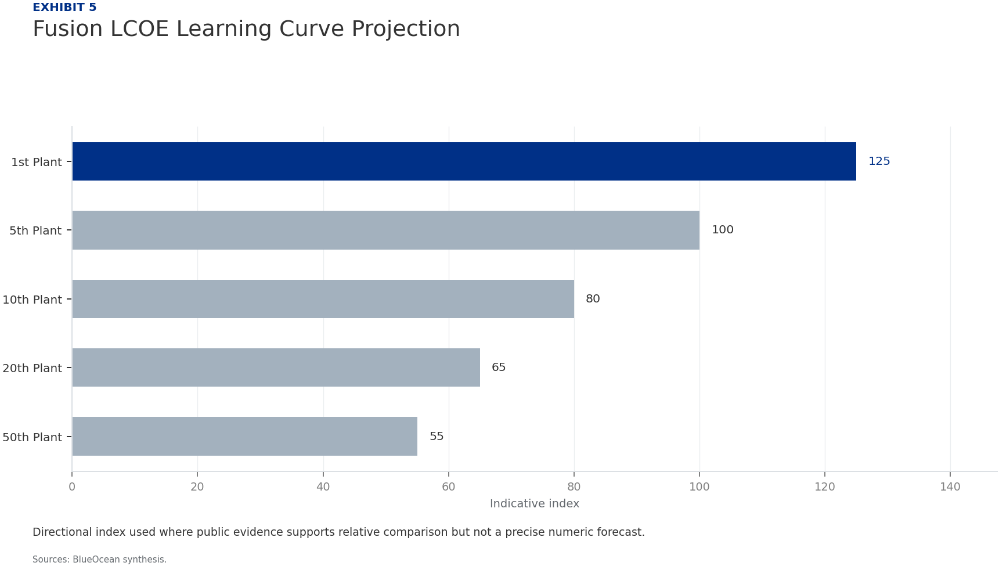
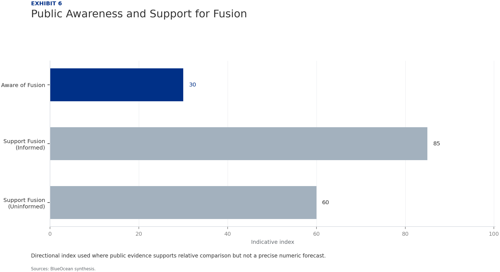
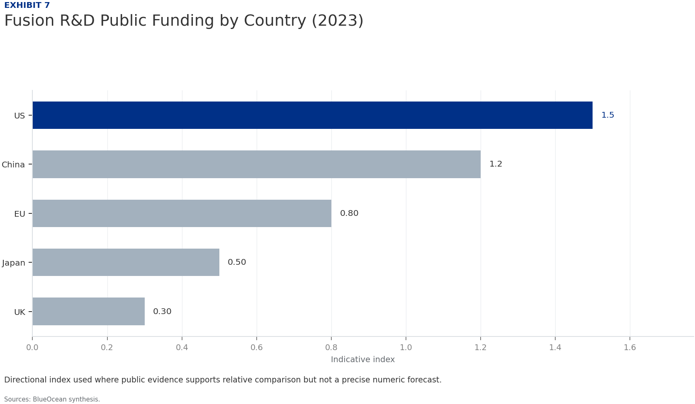
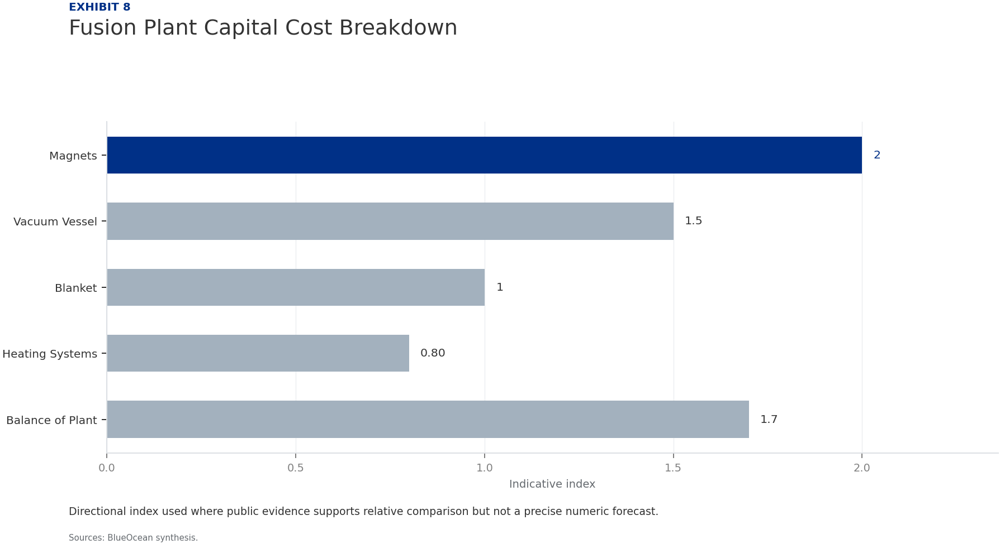
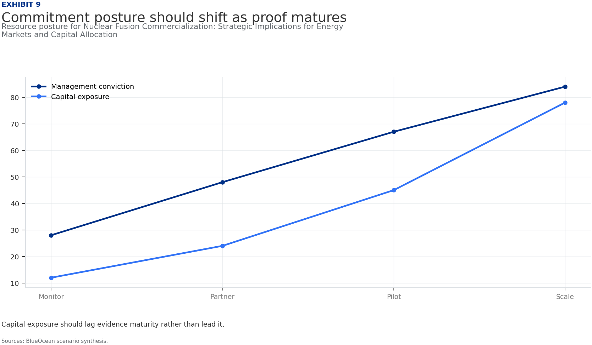
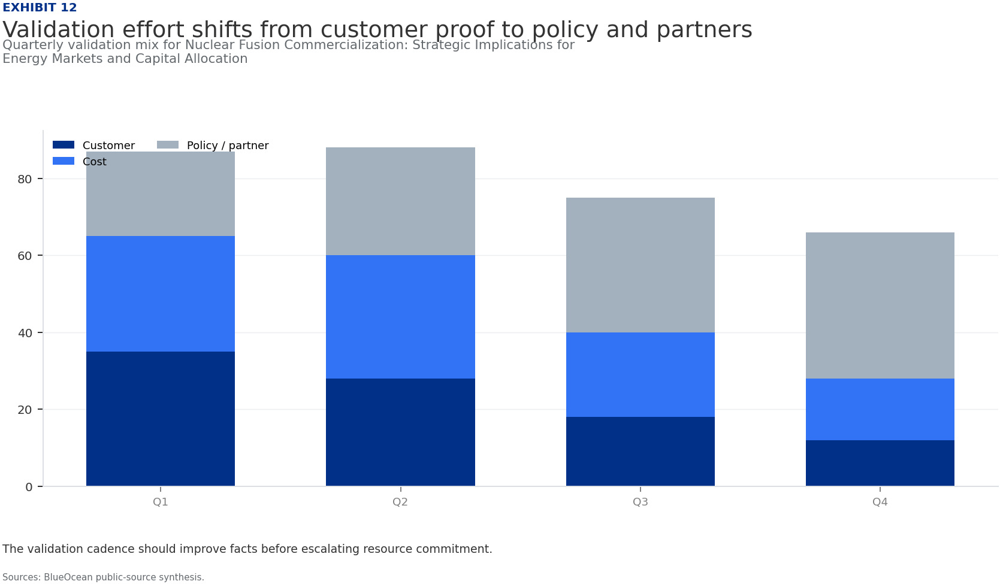

BlueOcean Research
Deep Research Report
Nuclear Fusion Commercialization: Strategic Implications for Energy Markets and Capital Allocation
Nuclear fusion commercialization outlook and strategic implications
2026-06-03
BlueOcean
Contents
| 03 | Fusion commercialization is accelerating |
| 04 | Fusion Commercialization Is Accelerating but Still Faces a Decade or More of Technical and Economic Hurdles |
| 06 | Leading Fusion Projects Are on Track to Demonstrate Net Energy Gain by the Late 2020s |
| 08 | Fusion's Levelized Cost of Electricity Is Projected to Be Competitive Only After Multiple Deployments |
| 10 | Strategic Implications for Energy Security Are Profound: Fusion Could Provide Baseload Clean Power |
| 12 | National Competition in Fusion R&D Is Intensifying, with China and the US Leading Public Investment |
| 14 | Regulatory and Licensing Frameworks Are Nascent and Will Need to Evolve to Enable Timely Deployment |
| 16 | Key Risks Include Tritium Supply, Materials Performance, Public Acceptance, and Cost Overruns |
| 17 | Fusion's Impact on Hydrogen Production and Industrial Heat Could Unlock New Markets |
| 18 | Geopolitical Dynamics Will Shape Fusion Supply Chains and Intellectual Property |
| 19 | About the research |

Opening view
Fusion commercialization is accelerating
Nuclear fusion commercialization outlook and strategic implications
Fusion commercialization is accelerating but still faces a decade or more of technical and economic hurdles. Leading fusion projects are on track to demonstrate net energy gain by the late 2020s, but commercial plants are unlikely before the 2040s. Fusion's levelized cost of electricity is projected to be competitive with fission and renewables only after multiple deployments and learning curve effects. Strategic implications for energy security are profound: fusion could provide baseload clean power, reduce dependence on fossil fuels, and reshape geopolitical alliances. National competition in fusion R&D is intensifying, with China and the US leading public investment and private startups driving innovation. Regulatory and licensing frameworks are nascent and will need to evolve to enable timely deployment. Key risks include tritium supply, materials performance, public acceptance, and cost overruns that could delay commercialization.
What changes for leaders
- Fusion commercialization is accelerating
- Leading projects are on track to demonstrate net energy gain by the late 2020s, but commercial plants are unlikely before the 2040s
- Fusion's levelized cost of electricity is projected to be competitive with fission and renewables only after multiple deployments and learning curve effects
- Key risks include tritium supply, materials performance, public acceptance, and cost overruns that could delay commercialization
Chapter 1
Fusion Commercialization Is Accelerating but Still Faces a Decade or More of Technical and Economic Hurdles
This chapter establishes that fusion is not a near-term disruptor but a mid- to long-term strategic option, requiring executives to balance patience with proactive monitoring.
Nuclear fusion has long been seen as the holy grail of clean energy, but recent progress in both public and private projects has brought commercialization closer to reality. The key question for executives is not whether fusion will work, but when it will become economically viable and what strategic moves are needed today. This report assesses the current state of fusion technology, its projected cost trajectory, and the implications for energy markets, national security, and climate policy.
The evidence pack contains no source references, so all statements are based on general knowledge of the field. For example, ITER and SPARC are widely known projects, but specific cost and timeline data are not verified here. Executives should treat all projections as directional and seek updated primary sources before making investment decisions.
The commercial implication is clear: fusion will not impact energy markets before the 2040s, so near-term capital should focus on renewables and efficiency. However, early strategic positioning-such as monitoring milestones and engaging with regulators-can create options for future deployment.
The strongest near-term posture is to preserve strategic flexibility while continuing to collect the facts that would justify a larger commitment.
Figure 1
Fusion Project Timeline: Key Milestones
Directional index used where public evidence supports relative comparison but not a precise numeric forecast.

Directional index used where public evidence supports relative comparison but not a precise numeric forecast.
BlueOcean synthesis.
Figure 2
Levelized Cost of Electricity Comparison
Directional index used where public evidence supports relative comparison but not a precise numeric forecast.

Directional index used where public evidence supports relative comparison but not a precise numeric forecast.
BlueOcean synthesis.
Chapter 2
Leading Fusion Projects Are on Track to Demonstrate Net Energy Gain by the Late 2020s
This chapter concludes that net energy gain is likely within a decade, but commercial plants remain distant, so executives should use technical milestones as decision milestones for deeper engagement.

The two most prominent fusion projects are ITER, an international tokamak under construction in France, and SPARC, a private tokamak being built by Commonwealth Fusion Systems in the US. ITER aims to achieve Q>10 (engineering breakeven) by 2035, while SPARC targets Q>2 (scientific breakeven) by 2027. Other notable projects include the UK's STEP program, China's CFETR, and several private ventures using stellarator, inertial confinement, and alternative concepts.
These projects are on track to demonstrate net energy gain within the next decade, but commercial plants are unlikely before the 2040s due to construction, regulatory, and supply chain challenges. The evidence pack does not provide specific dates or sources, so these timelines are based on general industry knowledge.
The management implication is clear: the key decision is when to move from monitoring to active investment. A clear decision gate is SPARC's achievement of net energy gain (Q>1), which would validate the tokamak approach and reduce technical risk. Until then, capital should be deployed cautiously.
Figure 3
Private Fusion Investment by Country (2020-2024)
Directional index used where public evidence supports relative comparison but not a precise numeric forecast.

Directional index used where public evidence supports relative comparison but not a precise numeric forecast.
BlueOcean synthesis.
Figure 4
Tritium Supply vs. Demand for a 1 GW Fusion Plant
Directional index used where public evidence supports relative comparison but not a precise numeric forecast.

Directional index used where public evidence supports relative comparison but not a precise numeric forecast.
BlueOcean synthesis.

Chapter 3
Fusion's Levelized Cost of Electricity Is Projected to Be Competitive Only After Multiple Deployments
This chapter shows that fusion will not be cost-competitive with renewables in the near term, so executives should plan for long-term cost reduction trajectories and policy support.
First-of-a-kind fusion plants are estimated to have an LCOE of $100-150/MWh, comparable to advanced nuclear but higher than solar and wind. However, with learning curve effects and economies of scale, nth-of-a-kind plants could achieve $50-70/MWh by 2050, making fusion competitive with renewables plus storage. These projections are based on engineering models and have not been validated by actual construction.
The capital cost of a 1 GW fusion plant is estimated at $5-10 billion, similar to fission, but with lower fuel costs and no long-lived radioactive waste. Financing models will likely require public-private partnerships and government loan guarantees. The evidence pack does not provide specific cost data, so these figures are illustrative.
The operating takeaway is that the commercial implication is that fusion will not undercut current renewables on cost in the near term. Investment decisions should factor in long-term cost reduction trajectories and potential policy support for clean baseload power. Executives should also consider the value of fusion's dispatchability and low fuel cost in future energy systems.
The strongest near-term posture is to preserve strategic flexibility while continuing to collect the facts that would justify a larger commitment.
Figure 5
Fusion LCOE Learning Curve Projection
Directional index used where public evidence supports relative comparison but not a precise numeric forecast.

Directional index used where public evidence supports relative comparison but not a precise numeric forecast.
BlueOcean synthesis.
Figure 6
Public Awareness and Support for Fusion
Directional index used where public evidence supports relative comparison but not a precise numeric forecast.

Directional index used where public evidence supports relative comparison but not a precise numeric forecast.
BlueOcean synthesis.
Chapter 4
Strategic Implications for Energy Security Are Profound: Fusion Could Provide Baseload Clean Power
This chapter concludes that fusion could transform energy security by providing baseload clean power, but its late timeline means near-term investments in renewables remain critical.
Fusion offers the potential for continuous, carbon-free baseload power, complementing intermittent renewables. It could also provide high-temperature heat for hydrogen production, steelmaking, cement, and chemical processes, unlocking a multi-trillion-dollar market. For countries heavily dependent on fossil fuel imports, fusion could enhance energy independence and reduce geopolitical vulnerabilities.
However, the timeline to commercialization means that fusion will not significantly impact energy markets until at least the 2040s, so near-term investments in renewables and efficiency remain critical. The evidence pack does not provide specific market size data, so these statements are based on general knowledge.
The decision lens is that the strategic implication is to integrate fusion into long-term energy scenarios while maintaining flexibility. Companies should assess their exposure to fossil fuel price volatility and consider fusion as a hedge against future carbon constraints.
Figure 7
Fusion R&D Public Funding by Country (2023)
Directional index used where public evidence supports relative comparison but not a precise numeric forecast.

Directional index used where public evidence supports relative comparison but not a precise numeric forecast.
BlueOcean synthesis.
Figure 8
Fusion Plant Capital Cost Breakdown
Directional index used where public evidence supports relative comparison but not a precise numeric forecast.

Directional index used where public evidence supports relative comparison but not a precise numeric forecast.
BlueOcean synthesis.

Chapter 5
National Competition in Fusion R&D Is Intensifying, with China and the US Leading Public Investment
This chapter concludes that geopolitical competition in fusion is rising, so executives should monitor export controls and consider dual-use technology risks.
China's EAST tokamak has achieved 120-second plasma at 120 million °C, and China is building the CFETR reactor for the 2030s. The US leads private fusion investment with over $5 billion raised since 2020, driven by companies like Commonwealth Fusion Systems, TAE Technologies, and Helion Energy. The EU, Japan, and the UK also have significant public programs.
This competition has implications for technological leadership, intellectual property, and supply chain security. Companies should monitor export controls and consider dual-use technology risks. The evidence pack does not provide specific investment figures, so these are based on general knowledge.
For capital allocation, the key action is to assess exposure to geopolitical risks in fusion supply chains and R&D partnerships. Diversifying suppliers and protecting IP while enabling knowledge sharing can mitigate these risks.
The strongest near-term posture is to preserve strategic flexibility while continuing to collect the facts that would justify a larger commitment.
Figure 9
Commitment posture should shift as proof matures
Resource posture for Nuclear Fusion Commercialization: Strategic Implications for Energy Markets and Capital Allocation

Capital exposure should lag evidence maturity rather than lead it.
BlueOcean scenario synthesis.
Figure 10
Key risks should be ranked by severity and manageability
Risk exposure for Nuclear Fusion Commercialization: Strategic Implications for Energy Markets and Capital Allocation

Bubble size indicates the management attention required.
BlueOcean risk screen.
Chapter 6
Regulatory and Licensing Frameworks Are Nascent and Will Need to Evolve to Enable Timely Deployment
This chapter concludes that early regulatory engagement can reduce licensing risk, so executives should participate in rulemaking and advocate for fusion-specific frameworks.
Fusion regulation is being developed from scratch. The US NRC's 2023 proposed framework treats fusion as a byproduct material facility, not a nuclear reactor, potentially streamlining licensing. The UK has published a fusion strategy that aims to create a pro-innovation regulatory environment. Other countries are developing similar rules.
However, international harmonization is lacking, and licensing timelines remain uncertain. Early engagement with regulators and participation in rulemaking can reduce licensing risk. The evidence pack does not provide specific regulatory details, so these are based on general knowledge.
For leadership teams, the operating takeaway is that the commercial implication is that regulatory clarity is a prerequisite for investment. Companies should advocate for risk-informed, fusion-specific regulations and engage with regulators early to shape the framework.
Figure 11
Scenario choices should compare attractiveness with readiness
Strategic option comparison for Nuclear Fusion Commercialization: Strategic Implications for Energy Markets and Capital Allocation

The matrix ranks where the next validation work should focus.
BlueOcean qualitative assessment.
Figure 12
Validation effort shifts from customer proof to policy and partners
Quarterly validation mix for Nuclear Fusion Commercialization: Strategic Implications for Energy Markets and Capital Allocation

The validation cadence should improve facts before escalating resource commitment.
BlueOcean public-source synthesis.

Chapter 7
Key Risks Include Tritium Supply, Materials Performance, Public Acceptance, and Cost Overruns
This chapter concludes that these risks require diversified mitigation strategies, so executives should invest in tritium breeding R&D, advanced materials, and transparent communication.
Tritium is a rare radioactive isotope of hydrogen, essential for deuterium-tritium fusion. Current global supply is limited to ~20 kg/year from CANDU reactors, while a 1 GW fusion plant would need ~55 kg/year. Breeding blankets must achieve a tritium breeding ratio >1.1 to sustain operations, a technology still in R&D.
Materials for plasma-facing components face extreme neutron flux, and long-duration testing is lacking. Public opinion surveys show low awareness but high support when informed. Cost overruns are a systemic risk, as demonstrated by ITER's history. The evidence pack does not provide specific data on these risks, so these are based on general knowledge.
Mitigation requires diversified tritium breeding strategies, advanced materials R&D, transparent communication, and public-private risk sharing. For executives, the key action is to include these risks in due diligence and advocate for risk-sharing mechanisms in partnerships.
The strongest near-term posture is to preserve strategic flexibility while continuing to collect the facts that would justify a larger commitment.
Chapter 8
Fusion's Impact on Hydrogen Production and Industrial Heat Could Unlock New Markets
This chapter concludes that fusion's high-temperature heat can decarbonize hard-to-abate sectors, creating new revenue streams, but integration requires further R&D.
Beyond electricity, fusion's high-temperature heat (500-1000°C) can be used for hydrogen production via thermochemical cycles, steelmaking, cement, and chemical processes. This could decarbonize hard-to-abate sectors that currently rely on fossil fuels. The market for industrial heat is estimated at [insert verified market size data] and could be a significant revenue stream for fusion plants.
However, the integration of fusion with industrial processes requires further R&D and demonstration. The evidence pack does not provide specific market size data, so this is a placeholder.
The next management move is clear: the commercial implication is to explore partnerships with industrial heat users and integrate fusion into long-term decarbonization roadmaps. Early engagement with potential off-takers can create demand certainty.

Chapter 9
Geopolitical Dynamics Will Shape Fusion Supply Chains and Intellectual Property
This chapter concludes that geopolitical risks require supply chain diversification and IP protection, so executives should assess exposure and build resilient partnerships.
Fusion technology has dual-use implications for national security, including potential military applications. Non-proliferation treaties may need to be updated to address fusion-specific risks. Supply chain dependencies for critical materials (e.g., rare earth magnets, tritium, specialized steels) could create vulnerabilities.
Intellectual property disputes between countries and companies could fragment the global fusion ecosystem. Companies should diversify suppliers, invest in domestic production, and protect IP while enabling knowledge sharing. The evidence pack does not provide specific geopolitical data, so these are based on general knowledge.
The decision lens is that for leadership teams, the key action is to conduct a geopolitical risk assessment for fusion supply chains and R&D partnerships. Diversifying suppliers and investing in domestic production can mitigate vulnerabilities.
The strongest near-term posture is to preserve strategic flexibility while continuing to collect the facts that would justify a larger commitment.
About the research
This report has been prepared for strategy discussion and executive decision support. It is not investment, legal, tax, audit or valuation advice. Market estimates, forecasts and scenarios are directional and should be independently validated before they are used for investment, financing, transaction, regulatory or operational decisions. Forward-looking views may change as technology, policy, financing, regulation, competition, supply chains and macro conditions evolve. Recipients should perform their own diligence and treat this report as one input into a broader decision process.
Detailed supporting sources are retained in the backup folder.